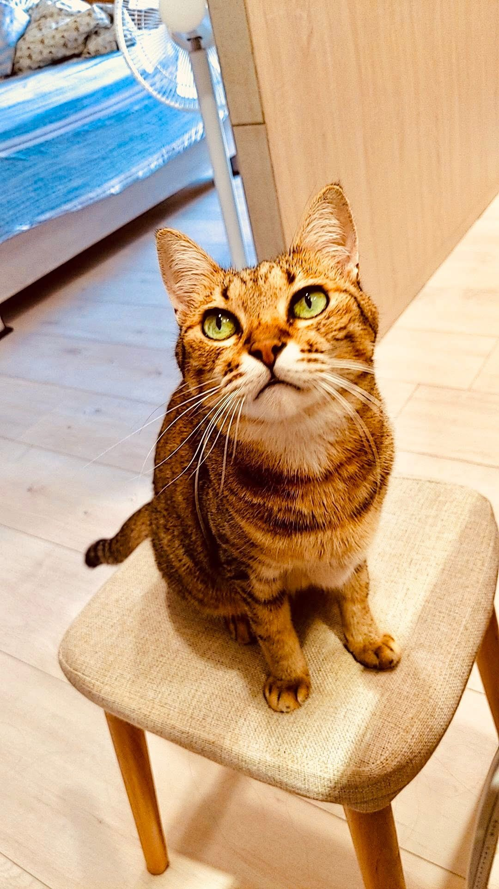
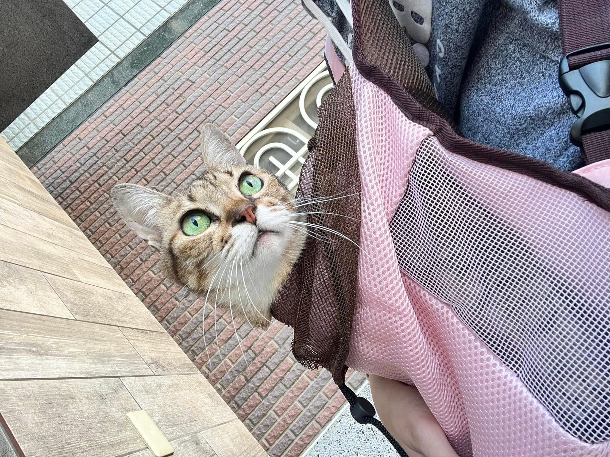
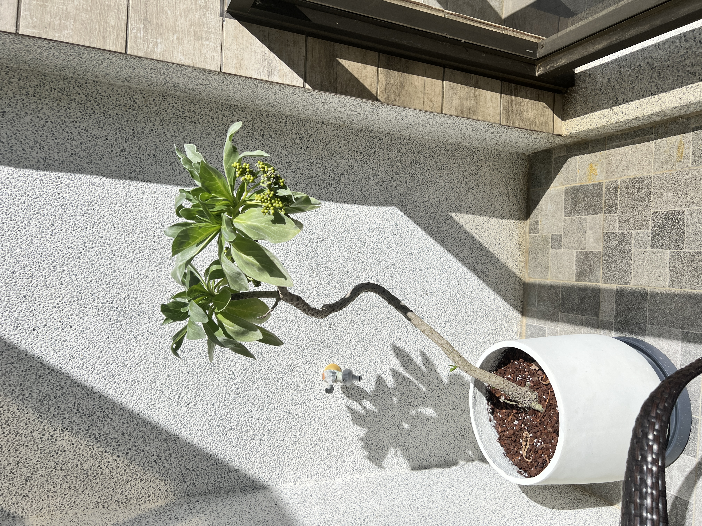

咪咪
最美麗的米克斯女孩，我們永遠的小天使。
即使妳回到了星貓雲端，妳留下的愛與那偶爾的一口「咬疼」，永遠是我們最珍貴的回憶。🐾

關於她
咪咪是一隻獨一無二的米克斯女孩。她擁有著最靈動的眼神和極其優雅的坐姿。雖然身為流浪過的孩子，但她卻活得比誰都像公主。
在她的生命中，她曾是一位英勇且慈愛的母親，在艱難的環境下順利誕生並撫育了5 隻可愛的小貓，看著孩子們長大是她最偉大的成就。
獨特的個性
咪咪不是那種隨便就能摸的貓，她有她的驕傲：
愛咬人的小傲嬌
那是她表達愛的一種方式，雖然有時候真的有點痛。🦷
最強母性
獨自照顧 5 隻搗蛋鬼，從不喊累。👩👧👦
米克斯之美
混血的毛色與堅毅的眼神，是她最美的勳章。✨
咪咪與五個寶貝
咪咪生的五隻小貓（可樂、秋口、嘟嘟、壯壯、毛毛），現在都已經在溫暖的家平安長大了。她把所有的溫柔都給了孩子，把所有的堅強都留給了自己。
即便後來因為生病而不得不離開我們，但她的基因與靈魂，依然透過那五對閃亮的小眼睛，在這個世界上繼續閃耀著。💖

永遠懷念
如果你也曾被咪咪「寵幸」過（指被咬一口），歡迎在心裡默默跟她打個招呼。
紀念日： 2025年5月21日
棲息地： 在陽台的白水木🛋️
最愛的食物： 罐罐與我的腿😋
